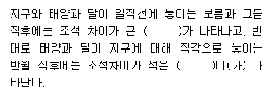
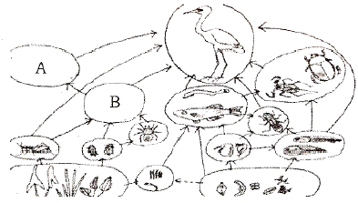
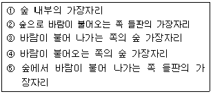
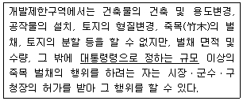
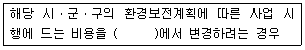

자연생태복원기사(구) (2014-05-25 기출문제)
1과목: 환경생태학개론
1. 생태계의 대사회전(Turnover)에 관한 설명으로 올바른 것은?
- 육상은 수중생태계보다 대사회전 시간이 짧다.
- 대사회전은 최종 소비자 집단의 개체수에 비례한다.
- 바다의 독립영양생물들의 대사회전은 느리게 진행된다.
- 현존량/현존량의 대체속도를 대사회전으로 간주한다.
(정답률: 59%)

2. 지구환경의 물질순환 중 지구온난화 가장 관계 있는 것은?
- 탄소 순환(the Carbon cycle)
- 질소 순환(the Nitrogen cycle)
- 인 순환(the Phosphorus cycle)
- 물 순환(the Hydrologic cycle)
(정답률: 84%)
3. 생태계의 제한 요인에서 식물의 생산성은 가장 많이 결핍된 단일원소의 양에 의해 결정된다는 법칙은 무엇인가?
- Shelford의 제한법칙
- Bergmann의 최소량의 법칙
- Liebig의 최소량의 법칙
- Cause의 제한법칙
(정답률: 83%)
4. 대체로 강수량이 적어 목본은 거의 없고, 수분이 부족한 건조한 환경의 토양에서는 흔히 어떤 식물 군락이 형성되는가?
- 온대림
- 열대우림
- 툰트라
- 초원
(정답률: 74%)
5. 다음에서 부분순환호(meromictic lake)에 설명으로 맞지 않는 것은?
- 하층은 무산소상태이다.
- 하층이 상층보다 밀도가 높다.
- 상하층이 동질적인 환경이다.
- 상하층이 물이 섞이지 않아 층형성이 계속 유지된다.
(정답률: 88%)
6. DDT와 같은 지용성 독성물질이 체내에 축적될 때 그 단위 생체량 당 잔류량이 가장 적은 생물은?
- 미라미
- 플랑크톤
- 가재
- 오리
(정답률: 88%)
7. 적조발생의 원인이 아닌 것은?
- 질소, 인과 같은 영양물질이 유입될 때
- 바닷물의 염분농도가 높아졌을 때
- 바닷물 온도가 섭씨 25℃ 이상일 때
- 철, 코발트 등 미량금속류가 첨가되었을 때
(정답률: 72%)
8. 람사르협약 내 국제적으로 중요한 습지의 기준(Ramsar Criteria for Identifying Wetlands of International Importance)에 해당하지 않는 것은?
- 대표적이고 희귀하거나 독특한 형태를 유지하고 있는 습지에 근거한 기준
- 경관적으로 보전가치가 높은 습지에 관한 기준
- 습지 생물종 및 생태적 군집에 근거를 둔 기준
- 물새 또는 물고기에 의한 기준
(정답률: 59%)
9. 환경요인에 대해서 특정 생물종의 생존가능 범위를 무엇이라고 하는가?
- 비생물범위
- 내성범위
- 생물범위
- 서식범위
(정답률: 85%)
10. 생물체에 있어 긴장에서 원성으로 다시 완전하게 돌아갈 수 있는 긴장을 탄성긴장(elastic strain)이라 한다. 몸체가 받는 탄성긴장은 스트레스양에 비례하기 때문에 몸체의 탄성도(elasticity, M)을 다음 중 가장 잘 표현한 것은?
- 탄성도(M) = 긴장 / 스트레스
- 탄성도(M) = 스트레스 / 긴장
- 탄성도(M) = 저항 / 긴장
- 탄성도(M) = 긴장 / 저항
(정답률: 67%)
11. 오존층보호를 위한 국제 협약이 아닌 것은?
- 비엔나 협약(Vienna Convention, 1985년)
- 몬트리올 의정서(Montreal Protocol, 1989년)
- 헬싱키 의정서(Helsinki Protocol, 1985년)
- 런던회의(London Revisions to Montreal Protocol, 1992년)
(정답률: 59%)
12. 다음 광합성 과정 중 산화ㆍ환원반응에 적합하게 구성된 과정은?
- CO2+H2O+태양에너지 = glucose + O2
- CO2+2H2A → (CH2O)+H2O+2A
- 2H2A → 4H+2A
- 4H+CO2 → (CH2O) + H2O
(정답률: 83%)
13. 생태계는 영양적(Trophic)인 입장에서 두 개의 구성요소를 갖는다. 이중 무기물을 사용하여, 복잡한 유기물질의 합성을 주로 하는 것을 무엇이라 하는가?
- 독립영양부분(autotrophic component)
- 종속영양부분(heterotrophic component)
- 대형소비자(macroconsumers)
- 섭식영양자(Phagotrophs)
(정답률: 72%)
14. 다음 중 ( )안에 들어갈 각각의 것은?

- 고조, 저조
- 사리, 조금
- 창조, 낙조
- 만조, 간조
(정답률: 75%)
15. 다음에서 포장용수량에 대한 설명으로 가장 적합한 것은?
- 식물이 이용하는 작은 공극에 있는 물의 양
- 토양이 물에 완전히 젖은 후 중력수가 제거되고 남은 물의 양
- 강우에 의해 토양의 큰 공극을 채우고 있는 수분의 양
- 토양입자의 표면에 흡착되어 있는 수분의 양
(정답률: 72%)
16. 다음 중 수계에 영양염류(질소, 인)가 과다하게 유입되어 증가하는 현상을 무엇이라 하는가?
- 돌연변이 현상
- 자정작용 현상
- 부영양화 현상
- 빈영양화 현상
(정답률: 92%)
17. 생태계에서는 생물체의 대사, 증식 및 사열로 인해 생물과 환경 사이에 물질의 순환이 일어나는데 이들 물질 중 인순환에 대한 설명이 아닌 것은?
- 인은 자연환경에서 생물체의 성장을 제한하는 중요한 원소이다.
- 인산염은 비료의 주요성분으로 과다한 비료의 사용은 인순환을 촉진시킬 수 있다.
- 자연수와 폐수 내에 인은 대부분 인산염(PO43-)의 형태로 존재한다.
- 유역에서 암석 붕괴(rock breakdown)가 일어나면 생물학적으로 이용 가능한 인이 하천에 방출된다.
(정답률: 42%)
18. 삼림쇠퇴의 특징이 아닌 것은?
- 성숙, 노화 개체들에서 선택적으로 발생하여 확산된다.
- 악천후, 영양결핍, 토양 내 독성물질, 대기오염 등이 원인이다.
- 삼림의 총생산량은 감소하더라도 순생산량은 증가한다.
- 광범한 지역의 식생이 동시에 고사하는 결과를 초래한다.
(정답률: 85%)
19. 생태학적 피라미드의 종류가 아닌 것은?
- 개체수 피라미드
- 생체량 피라미드
- 에너지 피라미드
- 환경요인 피라미드
(정답률: 78%)
20. 다음 중 생물다양성 및 환경보호와 관련된 국제기구가 아닌 것은?
- World Conservation Union
- World Resources Institute
- UNEP
- IDA
(정답률: 71%)
2과목: 환경계획학
21. 자연환경보전을 위한 기본방침에 포함되지 않는 사항은?
- 자연환경 훼손지의 복원ㆍ복구
- 남북한 및 지구차원의 자연보호 협력관계 완화
- 생태ㆍ경관보전지역의 관리 및 해당 지역주민의 삶의 질 향상
- 자연환경의 체계적 보전ㆍ관리, 자연환경속의 지속 가능한 이용
(정답률: 58%)
22. 다음 중 생태도시(生態都市)에 대한 설명으로 틀린 것은?
- 도시의 환경문제를 해결하고 환경보전과 개발을 조화시키기 위한 방안의 하나
- 동ㆍ식물학, 생태학, 지질학 분야에서 새롭게 대두되어 도시개발, 도시계획, 환경계획으로 확산된 영역
- 동ㆍ식물을 비롯한 녹지 보전, 에너지와 지원의 절약, 환경부하의 감소, 물과 자원의 절약, 재활용 및 순환 등이 중요
- 도시를 하나의 유기적 복합체로 보고 다양한 도시활동과 공간구조가 생태계의 속성인 다양상, 자립성, 순환성, 안정성 등을 포함하는 인간과 자연이 공존될 수 있는 환경친화적인 도시
(정답률: 53%)
23. 다음 중 공공에 의한 토지이용계획의 역할로 볼 수 없는 것은?
- 정주환경의 현재와 장래의 공간구성 기능
- 토지이용의 규제와 실행수단의 제시 기능
- 세부 공간환경설계에 대한 지침제시의 역할
- 인간중심의 지속적 개발계획 제시 기능
(정답률: 70%)
24. 환경부에서는 주택 및 공장, 휴양관광시설 등에 대해 생태계 보전지역과 녹지자연도 일정 등급 이상의 지역은 사업지역에서 제척하도록 하여, 자연이 양호한 지역에 무분별한 개발을 억제할 수 있는 행정적 제약을 두고 있는데, 녹지자연도의 적용 기준으로 적당한 것은?
- 9등급 이상
- 8등급 이상
- 7등급 이상
- 6등급 이상
(정답률: 48%)
25. 도시지역, 관리지역, 농림지역 또는 자연환경보전지역으로 용도가 지정되지 아니한 지역에 대해서는 용적률을 지정함에 있어 어느 지역의 기준을 적용하는가?
- 도시지역
- 관리지역
- 농림지역
- 자연환경보전지역
(정답률: 49%)
26. 유럽연합(EU)에서 추진하는 유럽지역의 생태 네트워크 프로젝트의 명칭은?
- 자연계획 2000(Natural 2000)
- 비오톱지도(biotope map)
- 유럽 환경도시계획
- 유럽연합 녹색 네트워크(EU green network)
(정답률: 46%)
27. 가렛 하딘(garrett hardin)의 「공유지의 비극」에 해당하지 않는 것은?
- 개인의 이익을 극대화 하려고 한다.
- 각각의 목장주에게 할당된 가축이 있다.
- 공공재의 중요성에 대해 기술하고 있다.
- 자연자원은 무한하므로 관리가 필요하지 않다.
(정답률: 74%)
28. 우리나라의 「용도지역」에 대한 설명이 잘못된 것은?
- 도시지역은 주거지역, 상업지역, 공업지역, 녹지지역의 중분류로 구분된다.
- 용도지역은 국토의 일부에 걸쳐 토지의 이용실태 및 특성, 토지이용방향 등을 고려하여 설정되어 있다.
- 국토의 용도지역은 도시지역, 관리지역, 농림지역, 자연환경 보호지역으로 구성된다.
- 관련 규정에 의한 용도지역 환원의 고시는 환원일자 및 환원사유와 용도지역이 환원된 도시ㆍ군관리계획의 내용을 당해 시ㆍ도의 공보에 게재하는 방법에 의한다.
(정답률: 36%)
29. 생태 네트워크의 필요성에 대한 설명 중 잘못된 것은?
- 무절제한 개발로 인한 훼손된 환경을 개발과 보전이 조화를 이루면서 자연지역을 보전하기 위해서이다.
- 생물다양성 증진 및 생태계를 회복시키기 위해서는 각각의 공간들이 유기적으로 연계될 수 있어야 한다.
- 불필요한 생물서식공간의 조성으로 인한 경제적 손실비용을 최소화하기 위해서이다.
- 생물서식공간을 각각의 독립적인 공간으로 조성하기 위해서이다.
(정답률: 68%)
30. 다음 중 자연환경보전계획의 위계로 옳은 것은?
- 시ㆍ군자연환경보전계획 → 시ㆍ도자연환경보전계획 → 자연환경보전기본게획
- 시ㆍ군자연환경보전계획 → 자연환경보전기본계획→ 시ㆍ도자연환경보전계획
- 자연환경보전기본계획 → 시ㆍ도자연환경보전계획 → 시ㆍ군자연환경보전계획
- 자연환경보전기본계획 → 시ㆍ도자연환경보전계획 → 시ㆍ도자연환경보전계획
(정답률: 61%)
31. 도시공원의 설치에 관한 도시ㆍ군관리계획결정으로 도시공원이 지정되어도, 그 고시일부터 10년이 되는 날까지 이것의 고시가 없는 경우에는 그 10년이 되는 날의 다음날에 그 효력을 상실한다. 이것은 무엇인가?
- 조성공사의 시작
- 공원조성계획
- 공원부지의 매수계획
- 공원조성 공사계약
(정답률: 59%)
32. 다음 중 기존 계획의 일반적 접근방법과 비교한 환경계획의 접근방법에 대한 설명으로 가장 적합한 것은?
- 보전가치가 높은 생태적 자원을 배려한 개발구상
- 개발 가능지 확보차원에서 계획적 접근 시도
- 환경에 대한 고려보다는 개발지향적인 구상안 수립
- 일방적 개방구상에 의한 계획수립 및 이용자 편익 중심의 인위적 공간배치
(정답률: 71%)
33. 다음 중 자연환경 보전기본계획의 내용으로 적절하지 않는 것은?
- 자연환경의 보전ㆍ관리에 관한 사항
- 지방자치단체별로 주요 자연보전시책에 관한 사항
- 사업시행에 소요되는 경비의 산정 및 재원조달 방안에 관한 사항
- 행정계획과 개발사업에 대한 환경친화적 계획 기법 개발에 관한 사항
(정답률: 22%)
34. 생태건축 계획의 요소와 가장 거리가 먼 것은?
- 중앙난방 계획
- 기후에 적합한 계획
- 적절한 건축재료 선정
- 에너지 손실 방지 및 보존 고려
(정답률: 71%)
35. 다음 중 「도시공원 및 녹지 등에 관한 법률」상의 ‘녹지’가 아닌 것은?
- 완충녹지
- 경관녹지
- 대상녹지
- 연결녹지
(정답률: 66%)
36. OECD에서 채택한 환경지표 설정을 위한 요소로 인간과 환경의 대응관계에 대한 3가지 구조요소에 해당하지 않는 것은?
- 계획(plan)
- 환경상태(state)
- 대책(response)
- 환경에의 부하(pressure)
(정답률: 57%)
37. 다음 중 옴부즈만(Ombudsman) 제도에 관한 설명으로 틀린 것은?
- 1809년 독일에서 최초로 창설되었다.
- 조선시대의 신문고 제도와 암행어사 제도와 유사한 제도이다.
- 다른 기관에서 처리해야 할 성격의 민원에 대해서 친절히 안내하는 기능을 한다.
- 행정기관의 위법-부당한 처분 등을 시정하고 국민에게 공개하는 등의 민주적인 통제기능을 한다.
(정답률: 65%)
38. 공원녹지기본계획 수립권자는 기 수립된 ‘공원녹지기본계획’에 의하여 그가 관할하는 도시지역의 일부에 대하여 세부계획을 수립하여야 하는 바, 이를 무엇이라 하는가?
- 공원녹지세부계획
- 도시녹지계획
- 도시녹화계획
- 공원녹화계획
(정답률: 29%)
39. 국토환경성평가도에서 3등급에 해당하는 관리원칙은?
- 이미 개발이 진행되었거나 진행중인 지역으로 개발을 허용하지만 보전의 필요성이 있으면 부분적으로 보전지역으로 지정하여 관리
- 개발을 허용하는 지역으로 체계적이고 종합적으로 환경을 충분히 배려하면서 개발을 수용
- 보전지역으로서 개발을 불허하는 것을 원칙으로 하지만 예외적인 경우에 소규모의 개발을 부분 허용
- 보전에 중점을 두는 지역이지만 개발의 행위, 규모, 내용 등을 환경성평가를 통하여 조건부 개발을 허용
(정답률: 31%)
40. 다음 중 녹지자연도 등급기준과 내용이 맞지 않은 것은?
- 2등급 : 논 또는 밭 등의 경작지구
- 5등급 : 갈대, 조릿대군락 등과 같이 비교적 식생의 키가 높은 이차적으로 형성된 초원지구
- 7등급 : 일반적으로 이차림이라 불리우는 대상 식생지구(자연군락이 인간의 영향에 의해 성립되었거나 유지되고 있는 군락)
- 8등급 : 다층의 식물사회를 형성하는 천이의 마지먹에 이르는 극상림지구
(정답률: 38%)
3과목: 생태복원공학
41. 생태통로를 조성할 때 횡단부위가 넓고, 절토지역 또는 장애물 등에 의해 동물을 위한 통로조성이 어려운 곳에 설치하는 통로는 무엇인가?
- 선형 통로
- 지하형 통로
- 육교형 통로
- 터널형 통로
(정답률: 69%)
42. 습지를 복원하여 야생동물 서식을 유도하려 한다. 조성할 습지의 최소면적과 개수부(open water) 비율은 얼마가 바람직한가?
- 최소면적 100m2, 개수부 25%
- 최소면적 100m2, 개수부 50%
- 최소면적 200m2, 개수부 25%
- 최소면적 200m2, 개수부 50%
(정답률: 50%)
43. 광산지역의 복원계획 수립 시 우선적으로 고려해야 할 사항으로 가장 거리가 먼 것은?
- 대규모 자연림 조성계획
- 서식처의 복원계획
- 채광 계획
- 지형복구 및 표토 활용 계획
(정답률: 49%)
44. 벽면 녹화를 위한 등반유형 중 「등반감기형」에 알맞은 식물로만 짝지어진 것은?
- 담쟁이덩굴, 송악
- 미루, 모람
- 등나무, 으름덩굴
- 노박덩굴, 능소화
(정답률: 53%)
45. 하천정비사업시 생태하천으로 조성하여 할 때 저탄소 녹생공법 적용이 가장 적절한 것은?
- 자생식물만으로 활용하여 조성하였다.
- 현장에 있던 제거대상 버드나무군락을 활용 절절한 장소에 그루터기공법 및 생가지공법을 적용하였다.
- 매트종자를 활용한 식생복원공법을 적용하였다.
- Hydrogun으로 Hydrogeeding공법을 적용 대규모 면적을 조기녹화했다.
(정답률: 66%)
46. 산성토양의 개량방법에 대한 설명으로 옳지 않은 것은?
- 산성토양을 개량하기 위해서는 석회 등 염기성물질을 첨가해 주어야 한다.
- 퇴비, 구비, 녹비 등 유기물을 사용하는 것은 토양의 물리ㆍ화학적 성질 개선에 효과가 크다.
- 개량할 목적으로 쓰이는 재료에는 석회석 분말, 생석회, 탄산석회, 소석회, 규회석분말 등이 있다.
- 석회를 많이 사용하여 토양의 pH가 7이상 되게 하는 것이 가장 좋다.
(정답률: 73%)
47. 생태적 복원공법유형의 기본개념이 올바르게 짝지어진 것은?
- Naturalization - 인위적인 관리를 통한 자연적인 천이를 유도함
- Colonization - 산림의 종자원(seed source)이 가능한 곳에서 가지치기, 솎아주기, 기타 교란 등을 중지하는 방법
- Natural Regeneration - 나지 형태로 조성한 후 향후 식물이 자연스럽게 이입하여 극상림으로 발달해 갈 수 있도록 유도함
- Nucleation - 수중을 패치 형태로 식재하는 방법으로 핵심종이 자리잡고, natural regeneration이 가속화되게 하는 방법
(정답률: 49%)
48. 다음 중 매립지 복원공법이 아닌 것은?
- 성토법
- 치환객토법
- 사주법
- 숏크리트공법
(정답률: 68%)
49. 생활사 전략 중 새로운 서식지나 불안정한 서식지에 적합하고 소형, 다산, 조기성숙 등의 특성을 가지는 경우는?
- r 선택
- K 선택
- C 전략
- S 전략
(정답률: 68%)
50. 토양미생물이 토양의 물리적 성질에 미치는 영향에 해당 하는 것은?
- 보비력 증대
- 인산의 유효도 증대
- 토양권에서 유효한 화학반응의 촉진
- 토양의 입단구조 발달
(정답률: 34%)
51. 다음 식물 중 내건성이 가장 우수한 녹화용 식물은?
- Zoysia spp.
- Festuca spp.
- Sedum spp.
- Poa spp.
(정답률: 50%)
52. 생태계의 복원원칙에 대한 설명으로 옳은 것은?
- 도입되는 식생은 생명력이 강한 외래수종을 우선적으로 사용한다.
- 각 입지별로 통일된 생태계로 조성할 수 있도록 복원계획을 수립한다.
- 적용하는 복원효과를 잘 검증할 수 있는 우선순위 지역을 선정하여 복원계획을 시행한다.
- 개별적인 생물의 구성요소를 중요시하며, 생태계의 전체적인 유지 및 회복에 우선해야 한다.
(정답률: 53%)
53. 토양의 형성에는 기후인자가 영향을 주는데, 이중 기후인자와 토양과의 설명으로 틀린 것은?
- 강우량이 많을수록 토양중 염기의 용탈이 심하게 일어나 알칼리토양으로 발달된다.
- 토양생성에서 가장 중요한 것은 토양 중 물의 이동방향과 물의 양이다.
- 습윤지대에서는 식생이 왕성하여 토양의 유기물함량이 많고 화학적 반응이 쉽게 일어난다.
- 강우량이 적은 건조지대에서는 물이 주로 상향 이동하기 때문에 토양교질물의 하향이동이 거의 일어나지 않는다.
(정답률: 49%)
54. 연못의 급수 및 퇴수시설에 대한 표준시방으로서 틀린 것은?
- 급수구나 퇴수구는 노출되지 않게 설치한다.
- 어류서식 연못에는 수돗물의 급수를 피한다.
- 오버플로우의 높이는 목표기준수면의 높이와 같게 해야한다.
- 퇴수구의 높이는 표준 수면의 높이보다 낮게 한다.
(정답률: 46%)
55. 다음은 백로의 먹이사슬을 나타낸 것이다. 그림의 A와 B에 들어갈 수 있는 동물군이 아닌 것은?

- 맹꽁이
- 뱀
- 올챙이
- 도마뱀
(정답률: 62%)
56. 다음 토양개량자재에 대한 설명 중 틀린 것은?
- 이탄 : 물이끼, 탄화된 풀잎 등이 주원료
- 제오라이트 : 흑운모를 분쇄하여 고온가열 처리한 것
- 펄라이트 : 진주암, 흑요석 등을 분쇄하고, 고온가열 처리한 것
- 규조토소성립 : 규조토를 조립(입경 2mm)하여 구워 완성 한 것
(정답률: 52%)
57. 토양의 용탈층에 대한 설명 중 틀린 것은?
- 토양내 가용성 성분의 용탈이 일어나는 층이다.
- 용탈층에서는 외부에서 가해진 유기물이 점차 분해를 받게 된다.
- 용탈층에서는 분해가 더욱 진전된 유기물이 무기입자와 잘 섞이게 되므로 유기물 함량이 높다.
- 표층으로부터 용탈된 성분이 집적되는 층이 형성된다.
(정답률: 36%)
58. 산림 및 도시생태계 복원을 위한 기본적인 원칙으로 바람직하지 않은 것은?
- 대상지의 훼손정도에 따라 다르게 설정하는 것이 필요하다.
- 훼손정도가 약한 지역에 있어서는 긴급한 복원을 통해 혹산을 방지한다.
- 자연적인 복원이 어려운 지역에 대해서는 최소한의 에너지 투입으로 자연계의 회복력을 촉진시키는 복원방법을 선택한다.
- 방치하면 확산이 우려되는 지역은 기반안정, 생물종 도입 등 적극적인 복원방법이 필요하다.
(정답률: 66%)
59. 식물의 생활사 중 연결이 잘못된 것은?
- 여름형 1년생식물 : 벼
- 겨울형 1년생식물 : 보리
- 2년생식물 : 붓꽃
- 다년생식물 : 참억새
(정답률: 52%)
60. 반딧불이 서식을 유도하는 자연형 하천복원은 어떤 수생생물종의 서식을 필요로 하는가?
- 왕잠자리
- 소금쟁이
- 깔다구
- 다슬기
(정답률: 64%)
4과목: 경관생태학
61. 경관생태(Landscape Ecology)라는 용어를 가장 먼저 사용한 사람은?
- C. Troll
- I. S. Zonneveld
- E. Haeckel
- L. Finke
(정답률: 67%)
62. 다음 패치(patch)의 크기에 대한 설명 중 옳은 것은?
- 큰 패치가 작은 두 개의 패치로 나뉘어지면, 내부종의 개체군의 크기와 수를 증가시킨다.
- 큰 패치가 두 개의 패치로 나뉘어지면, 주연부 서식처는 줄어들고 종의 개체군은 커진다.
- 종이 국지적으로 멸종할 가능성은 패치 크기가 작고 서식처 질이 낮아질수록 높아진다.
- 큰 패치는 더 많은 서식처를 가지게 되고, 작은 패치보다 더 적은 종을 포함하게 된다.
(정답률: 70%)
63. 가장자리의 바람이라는 미기후에 따라 가장자리의 폭이 다르게 나타난다. 다음 중 가장자리가 넓은 것에서부터 좁은 것까지 순서대로 나열한 것은?

- ① → ③ → ④ → ② → ⑤
- ⑤ → ② → ④ → ③ → ①
- ③ → ④ → ① → ⑤ → ②
- ② → ⑤ → ④ → ③ → ①
(정답률: 48%)
64. 벡터자료와 래스터자료의 차이점으로 옳지 않은 것은?
- 벡터자료는 공간적 정확성이 높은 장점이 있다.
- 벡터자료는 복잡한 데이터구조를 갖는 단점이 있다.
- 래스터자료는 원격탐사 영상자료와 연계가 용이한 장점이 있다.
- 래스터자료는 다양한 모델링을 할 수 없는 단점이 있다.
(정답률: 52%)
65. 농촌경관의 변화에 대한 다름 설명 중 가장 옳은 것은?
- 경제성 위주의 토지이용 정책으로 인해 전통문화경관과 고유한 생태계가 변화되었다.
- 화석연료의 사용이 증가되면서 산림 등의 식생이 급격하게 훼손되어 생태계가 전멸되었다.
- 농촌인구가 급격히 감소되면서 기존의 묵논이나 폐농지가 적극적으로 개발 이용 되고 있다.
- 농촌생활환경의 변화로 도로, 주택, 대체산업 등의 토지이용이 증가하여 생태계의 안전성이 높아지고 있다.
(정답률: 45%)
66. 경관생태학에 대한 개념 설명과 거리가 먼 것은?
- 조경과 토지관리 및 계획 그리고 인문지리화 생태학 분야의 총체적 접근을 시도
- 여러 가지 다른 요소로 이루어져 있는 총체적인 실체로서 토지를 고려하는 지리학적 접근을 시도
- 공간적인 이질성의 발달과 역동성, 시공간적 상호작용과 교환 원리를 고려
- 개체, 가족, 사회 및 군집의 발달원리를 연구하는 학문분야
(정답률: 61%)
67. 비오톱 조성의 역할이 아닌 것은?
- 생활환경의 개선
- 주민 소득 증대에 기여
- 환경교육의 장소 제공
- 자연생태계의 복원
(정답률: 72%)
68. 경관생태학에서 경관구조를 나타내는데 사용하는 개념이 아닌 것은?
- 통로
- 바탕
- 조각
- 지구
(정답률: 63%)
69. 생태계 관련 도면 중 생태적가치, 자연성, 경관적 가치에 따라 3등급화한 것으로서 식생등급, 임상도 등 자연환경 특성을 고려하여 작성된 지도는?
- 녹지자연도
- 생태ㆍ자연도
- 현존식생도
- 산지이용도
(정답률: 62%)
70. 가장자리(Edge)의 생태적 여과기능을 결정짓는 변수와 거리가 먼 것은?
- 층위구조
- 순환성
- 곡선도
- 폭
(정답률: 32%)
71. 해안사구에 대한 설명으로 잘못된 것은?
- 해안사구 형성에 영향을 주는 요인으로 모래 공급량, 풍속 및 풍향이 있다.
- 해안사구는 육지와 바다 사이의 퇴적물의 양을 조절한다.
- 해안 고유 식물과 동물의 서식지 기능을 한다.
- 해안사구는 1차 사구와 2차 사구로 구분하고, 바다쪽 사구를 2차 사구라고 한다.
(정답률: 60%)
72. 생태 이동통로에 대한 설명 중 옳지 않은 것은?
- 일반적으로 영양단계 높은 종의 이동통로 폭은 좁다.
- 일반적으로 양 지점을 잇는 이동통로의 경사도는 완만하게 만들어야 한다.
- 생태 이동통로를 설치하게 되면 전에는 없었던 서식지 기능을 살려주어야 한다.
- 생태 이동통로는 동물들의 통로가 되어 포식자에게 사냥터를 제공할 수 있다.
(정답률: 64%)
73. 경관생태학에서 의미하는 습지의 핵심적인 기능이 아닌 것은?
- 환경질의 개선
- 지하수 저장 및 충전
- 어류 및 야생동물 서식처로서의 기능
- 시각적인 아름다움의 증진
(정답률: 58%)
74. 다음 중 경관을 이루는 기본단위를 경관요소라고 한다. 이 경관요소 개념에 포함되지 않은 것은?
- 군집(community)
- 바탕(matrix)
- 통로(corridor)
- 패치(patch)
(정답률: 70%)
75. 야생동물의 서식처로서 자연보전지구를 설정할 때 내부종과 가장자리종을 동시에 보호하고자 한다면 다음 중 가장 적절한 지역으로 볼 수 있는 곳은?
- 원형의 큰 숲과 여러 개의 균일한 숲 패치, 통로가 일직선으로 배치되어 있는 지역
- 부정형의 큰 숲과 여러 개의 균일한 숲 패치, 통로가 십자형으로 안배되어 있는 지역
- 부정형의 큰 숲과 원형의 작은 숲 패치, 하나의 큰 통로가 적절한 짜임으로 안배되어 있는 지역
- 원형의 큰 숲과 일그러지거나 작은 숲 패치, 통로가 적절한 짜임으로 안배되어 있는 지역
(정답률: 53%)
76. 생물의 이동을 위해서는 패치간 연결성이 높을수록 좋다. 연결성을 높이는 방법이 아닌 것은?
- 두 패치를 생태통로로 연결한다.
- 두 패치 사이에 징검다리 녹지를 조성한다.
- 패치의 면적을 확대하여 패치간의 거리를 단축시킨다.
- 패치의 굴곡이 심하도록 주연부를 증대한다.
(정답률: 58%)
77. 분광반사율은 대상물체가 가지고 있는 전자파의 특성에 따라 다르나 다음 대상물 중에서 높은 반사율 순으로 나열한 것은?
- 물＞토양＞식생
- 물＞식생＞토양
- 식생＞물＞토양
- 식생＞토양＞물
(정답률: 32%)
78. UNESCO에서 제안한 보전지역관리를 위한 용도지역 구분이 아닌 것은?
- 핵심지역
- 완충지역
- 수변지역
- 전이지역
(정답률: 74%)
79. 방풍림의 다공성과 높이에 대한 설명으로 옳지 않은 것은?
- 방풍림의 높이는 주로 방풍림의 효과가 미치는 후면의 거리를 결정한다.
- 다공성은 기본적으로 방풍림의 전면과 후면의 풍속에 영향을 미친다.
- 설계 목적에 의해 다르기는 하지만, 조밀한 식재에 의한 방풍림은 다공성이 큰 방풍림보다 상대적으로 효과적이다.
- 돌담이나 조밀한 상록수 방풍림은 전, 후면에 많은 난기류가 생긴다.
(정답률: 48%)
80. 다음 경관생태적 원리에 입각한 자연형 하천복원의 유의점을 설명한 것으로 옳지 않은 것은?
- 실시예정구간의 수리특성을 충분히 감안한다.
- 표준단면을 설정하여 상ㆍ하류 일률적으로 하천 폭을 설정한다.
- 치수계획에 지장이 없는 범위 내에서 다자연형 하천조성 방안의 검토가 필요하다.
- 하천지역의 자연적인 조건 및 특성을 충분히 파악하여 구간별 차별화된 구성방안을 마련한다.
(정답률: 59%)
5과목: 자연환경관계법규
81. 자연공원법상 공원관리청이 자연공원을 효과적으로 보전하고 이용할 수 있게 하기 위해 구분한 용도지구의 구분으로 거리가 먼 것은?
- 공원자연보존지구
- 공원자연환경지구
- 공원개발환경지구
- 공원문화유산지구
(정답률: 52%)
82. 생물다양성 보전 및 이용에 관한 법률상 용어의 뜻으로 옳지 않은 것은?
- “생물다양성”이란 육상생태계 및 수생생태계와 이들의 복합생태계를 포함하는 모든 원천에서 발생한 생물체의 다양성을 말하며, 종내ㆍ종간 및 생태계의 다양성을 포함한다.
- “생물자원”이란 사람을 위하여 가치가 있거나 실제적 또는 잠재적 용도가 있는 유전자원, 생물체, 생물체의 부분, 개체군 또는 생물의 구성요소를 말한다.
- “유전자원”이란 유전(遺傳)의 기능적 단위를 포함하는 식물ㆍ동물ㆍ미생물 또는 그 밖에 유전적 기원이 되는 유전물질 중 실질적 또는 잠재적 가치를 지닌 물질을 말한다.
- “생태계 교란생물”이란 외국으로부터 인위적 또는 자연적으로 유입되어 그 본래의 원산지 또는 서식지를 벗어나 존재하게 된 생물을 말한다.
(정답률: 45%)
83. 자연공원법상 자연공원에서의 금지행위 중 “지정된 장소밖에서의 주차행위를 한 자” 에 대한 과태료 부과기준으로 옳은 것은?
- 500만원 이하의 과태료를 부과한다.
- 100만원 이하의 과태료를 부과한다.
- 50만원 이하의 과태료를 부과한다.
- 10만원 이하의 과태료를 부과한다.
(정답률: 60%)
84. 자연환경보전법상 생태ㆍ경관보전지역의 지속가능한 보전ㆍ관리를 위하여 생태ㆍ경관보전지역을 구분하여 지정ㆍ관리하고자 할 때, 그 구분지역으로 옳지 않은 것은?
- 생태ㆍ경관핵심보전구역
- 생태ㆍ경관완충보전구역
- 생태ㆍ경관전이보전구역
- 생태ㆍ경관관리보전구역
(정답률: 50%)
85. 야생생물보호 및 관리에 관한 법률 시행규칙상 “유해야생동물” 과 거리가 먼 것은?
- 장기간에 걸쳐 무리를 지어 농작물 또는 과수에 피해를 주는 참새
- 일부지역에 서식밀도가 너무 높아 농ㆍ림ㆍ수산업에 피해를 주는 호사비오리
- 전주 등 전력시설에 피해를 주는 까치
- 일부지역에 서식밀도가 너무 높아 분변(糞便) 및 털 날림 등으로 문화재 훼손이나 건물 부식 등의 재산상 피해를 주거나 생활에 피해를 주는 집비둘기
(정답률: 44%)
86. 습지보전법상 습지보전을 위해 설치할 수 있는 시설 중 가장 거리가 먼 것은?
- 습지연구시설
- 습지준설복원시설
- 습지오염방지시설
- 습지생태관찰시설
(정답률: 53%)
87. 자연공원법상 공원관리청의 허가를 받지 아니하고 사용료를 징수한 자에 대한 벌칙기준으로 옳은 것은?
- 3년 이하의 징역 또는 3천만원 이하의 벌금에 처한다.
- 2년 이하의 징역 또는 2천만원 이하의 벌금에 처한다.
- 1년 이하의 징역 또는 1천만원 이하의 벌금에 처한다.
- 200만원 이하의 과태료에 처한다.
(정답률: 44%)
88. 야생생물보호 및 관리에 관한 법률 시행규칙상 멸종위기 야생생물 Ⅰ급에 해당하지 않는 것은?
- 표범
- 따오기
- 흰꼬리수리
- 죽백란
(정답률: 57%)
89. 야생생물보호 및 관리에 관한 법률상 생물자원보전시설을 등록한 자가 시설 및 요건을 갖추지 못하여 등록이 취소된 경우, 취소된 날부터 며칠이내에 그 등록증을 환경부장관 등에게 반납하여야 하는가?
- 3일 이내에
- 5일 이내에
- 7일 이내에
- 15일 이내에
(정답률: 54%)
90. 국토의 계획 및 이용에 관한 법률상 각 용도지역별 용적률의 최대한도 기준으로 옳은 것은?
- 도시지역 중 녹지지역 : 500퍼센트 이하
- 관리지역 중 생산관리지역 : 100퍼센트 이하
- 농림지역 : 80퍼센트 이하
- 자연환경보전지역 : 100퍼센트 이하
(정답률: 34%)
91. 국토기본법상 국토종합계획은 얼마의 기간을 단위로 하여 수립하는가?
- 2년
- 5년
- 10년
- 20년
(정답률: 52%)
92. 환경정책기본법령상 이산화질소(NO2)의 대기환경기준으로 옳은 것은? (단, 24시간 평균치)
- 0.02ppm 이하
- 0.03ppm 이하
- 0.⑤ppm 이하
- 0.06ppm 이하
(정답률: 42%)
93. 농지법규상 농지보전부담금을 자진납부하려는 경우 그 납부기간 기준은?
- 자진납부에 따른 농지보전부담금 내역확인서를 교부받은 날부터 5일로 한다.
- 자진납부에 따른 농지보전부담금 내역확인서를 교부받은 날부터 7일로 한다.
- 자진납부에 따른 농지보전부담금 내역확인서를 교부받은 날부터 10일로 한다.
- 자진납부에 따른 농지보전부담금 내역확인서를 교부받은 날부터 15일로 한다.
(정답률: 43%)
94. 다음은 개발제한구역의 지정 및 관리에 관한 특별조치법 시행령상 개발제한구역에서의 행위제한에 관한 내용이다. 밑줄 친 “대통령령으로 정하는 규모”의 기준으로 옳은 것은?

- 벌채 면적 500제곱미터 또는 벌채 수량 5세제곱미터
- 벌채 면적 300제곱미터 또는 벌채 수량 3세제곱미터
- 벌채 면적 200제곱미터 또는 벌채 수량 2세제곱미터
- 벌채 면적 100제곱미터 또는 벌채 수량 1세제곱미터
(정답률: 32%)
95. 자연환경보전법규상 생태통로 설치기준에 관한 설명으로 옳지 않은 것은?
- 생태통로 내부에 돌무더기나 고사목ㆍ그루터기ㆍ장작더미 등의 다양한 서식환경과 피난처를 설치한다.
- 생태통로 입구와 출구에는 원칙적으로 현지에 자생하는 종을 식수하며, 토양 역시 가능한 한 공사 중 발생한 정토를 사용한다.
- 생태통로 내부에는 다양한 수직적 구조를 가진 아교목ㆍ관목ㆍ초목 등으로 조성한다.
- 생태통로의 길이가 길수록 폭을 좁게 설치한다.
(정답률: 66%)
96. 다음은 환경정책기본법령상 환경보전계획을 수립하거나 변경하고자 할 때, 대통령령으로 정하는 결미한 사항의 경우에는 지방환경관서의 장과의 협의를 생략할 수 있는 기준이다. ( )안에 알맞은 것은?

- 100분의 10 이내의 범위
- 100분의 20 이내의 범위
- 100분의 30 이내의 범위
- 100분의 50 이내의 범위
(정답률: 39%)
97. 백두대간 보호에 관한 법률상 삼림청장은 백두대간보호 기본계획을 몇 년 마다 수립하여야 하는가?
- 1년
- 3년
- 5년
- 10년
(정답률: 58%)
98. 환경정책기본법령상 하천의 수질 및 수생태계 기준 중 “음이온 계면활성제(ABS)" 기준값(mg/L)으로 옳은 것은? (단, 사람의 건강보호기준)
- 검출되어서는 안됨(검출한계 0.001)
- 검출되어서는 안됨(검출한계 0.01)
- 0.⑤ 이하
- 0.5 이하
(정답률: 31%)
99. 자연환경보전법령상 생태ㆍ자연도를 작성할 때 구분하는 지역 중 별도관리지역으로 가장 거리가 먼 것은?
- 수도법에 따른 상수원보호구역
- 산림보호법에 따른 산림보호구역
- 문화재보호법에 따라 천연기념물로 지정된 구역
- 자연환경보전법에 따른 시ㆍ도 생태ㆍ경관보전지역
(정답률: 32%)
100. 개발제한구역의 지정 및 관리에 관한 특별조치법상 개발제한구역 지정 및 해제기준으로 옳지 않은 것은?
- 국방부장관의 요청으로 보안상 도시의 개발을 제한할 필요가 있다고 인정되면 개발제한구역의 지정에 한해 국가기본관리계획에 의해 결정한다.
- 도시의 정체성 확보 및 적정한 성장관리를 위하여 개발을 제한할 필요가 있는 지역이 지정지역 대상에 해당한다.
- 개발제한구역의 지정 및 해제의 기준은 대상 도시의 인구ㆍ산업ㆍ교통 및 토지이용 등 경제적ㆍ사회적 여건과 도시 확산 추세, 그 밖의 지형 등 자연환경 여건을 종합적으로 고려하여 대통령령으로 정한다.
- 도시주변의 자연환경 및 생태계를 보전하고 도시민의 건전한 생활환경을 확보하기 위하여 개발을 제한할 필요가 있는 경우 지정지역 대상에 해당한다.
(정답률: 28%)